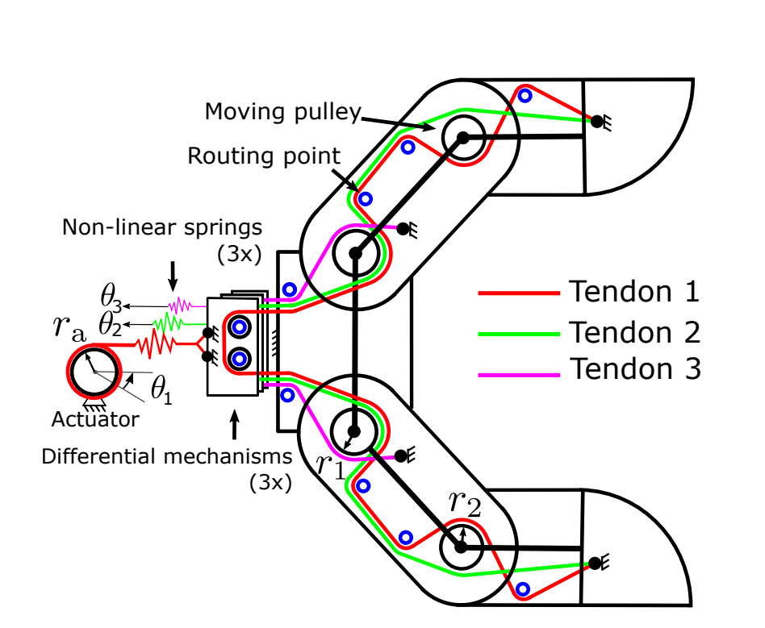
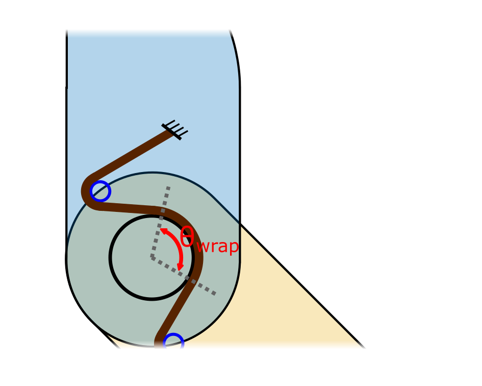
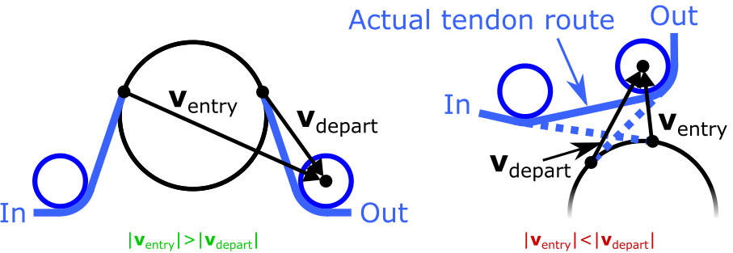
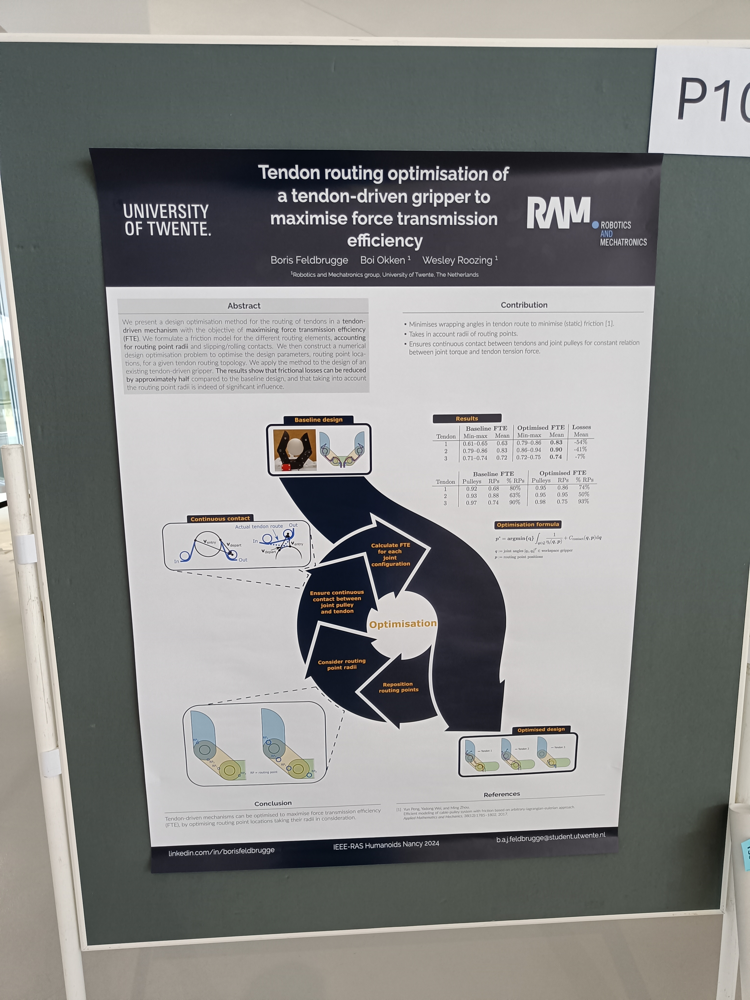
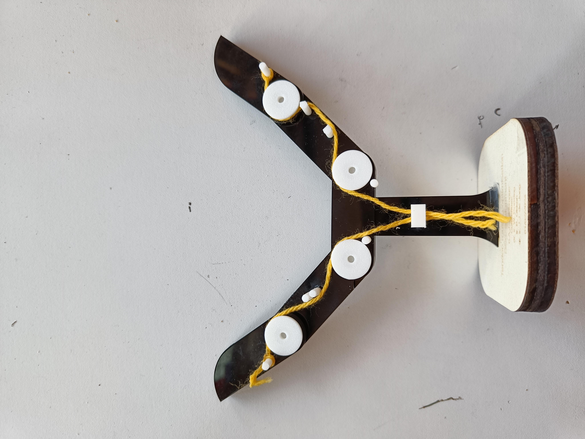

Project goal
The aim of my BSc thesis was to optimise a tendon routed gripper to reduce friction effects. This gripper was designed to manipulate food objects, which are notoriously difficult to manipulate. The current design of the gripper featured too much friction in the tendon routing. The gripper consists of 3 tendons that actuate the two phalanges of each finger, thus the system is underactuated. This was by design to passively adapt to the shape of the objects. The tendons are actuated with a non linear series elastic actuator (SEA) to regulate the force applied to the object.Internally, the tendons are routed over pulleys (in the joints) and routing points (in the phalanges). We focused the research to optimise the routing point positions.
The original gripper is a gripper designed for FlexCraft and more details can be found in this paper: https://ieeexplore.ieee.org/abstract/document/10260297

Tendon routing inside gripper
This figure shows the tendon routing inside the gripper. The gripper consists of two fingers with each two phalanges. Both fingers share the same three tendons. This figure is again from the original paper.
Friction model
As friction we assumed there would be no slip over the pulleys and routing points. We minimise the static friction and use the Capstan equation to describe our friction as a function of wrapping angle of the tendon around the routing points and pulleys.The novelty of our method is that we consider the radii of pulleys AND the routing points in the tendon routing. Normally the tendon routing points are considered to be points without radius.

Ensuring tendon contact with pulleys
Important to us was the constant contact between the tendons and their pulleys because that results in a constant relationship between tension force on the tendon and the torque on each joint.We ensured this constant contact by adding a soft constraint that enforces the tendons to be in contact with their pulleys.

Results
The results show that the force transmission efficiency (FTE) has improved for all the three tendons.
Published!
We published the work at IEEE-RAS HUMANOIDS 2024, paper can be found here: ieeexplore.ieee.org/abstract/document/10769817The conference was an amazing experience!

Full scale gripper gift
To thank my amazing supervisors, I designed a full scale version of the gripper with laser cut acrylic featuring the old tendon routing and the optimised tendon routing.